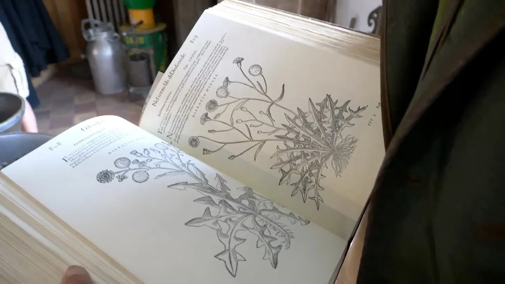

"Tko ne vjeruje u snagu prirode, nikada neće razumjeti vlastito tijelo."Djed Ivan Horvat, narodni iscjelitelj iz Zagorja, vratio je više od 1700 ljudi radost hodanja bez ijedne prepisane kemijske tablete. Naš novinar otišao je do njegove zabačene kuće da mu postavi najvažnije pitanje: kako mu to uspijeva?
Djed Ivan s jednom od svojih pacijentica, tetom Marom iz Krapine. "Ove ljude nitko ne posjećuje. Djeca su otišla, liječnici su ih otpisali. Ali priroda ih nije otpisala. Treba samo osluhnuti ono što šapuće."
Objavljeno:
, 09:36
U brdima Hrvatskog zagorja živi 72-godišnji čovjek kojeg u okolnim selima jednostavno zovu "djed Ivan". Nikada nije bio liječnik. Nikada nije studirao. Ali je u posljednje tri godine spasio više od 1700 ljudi od bolova u zglobovima — ljude koje su i najbolji specijalisti već otpisali. Ljude osuđene na invalidska kolica. Ljude koji nisu mogli ustati iz vlastitog kreveta. Sve to zahvaljujući običnim tubama gela, napravljenim vlastitim rukama — po drevnoj mudrosti prirode.
U utorak ujutro stigli smo u Krapinu, u šumovite doline u Hrvatskom zagorju. Magla je još visjela među vrhovima. Posljednje kilometre prešli smo pješke, jer dalje nema asfaltnog puta. "Tražite djeda Ivana?" — upitala je starija žena na kraju sela, s maramom na glavi. "Skrenite lijevo kod male kamene česme. Njegova kuća je kod izvora. Ali požurite, jer u podne ide u brda brati ljekovito bilje."
Tako smo našli Ivana Horvata — 72-godišnjeg narodnog iscjelitelja koji je cijeli život proveo u Hrvatskom zagorju i koji danas ruši jedan od najvećih tabua u zemlji: da za bolove u zglobovima postoji stvarno rješenje. Rješenje koje ne ovisi o kemijskim tabletama, injekcijama ili operacijama. Nego o susretu prirode, drevne mudrosti i stoljetnog pamćenja.
U bližim mjestima — u Krapini, Ivancu, Golubovcu i drugdje — djeda Ivana poznaje gotovo svaka obitelj. Kćerke dovode svoje očeve koji šepaju da ih pogleda. Žene naručuju tube gela za svoje majke u staračkim domovima. Muškarci dolaze nakon dugih radnih dana da bi ponovo mogli hodati. Liječnik iz općinskog doma zdravlja priznaje: "Ne umijem objasniti što se dešava s tim čovjekom. Ali moji pacijenti se zaista oporavljaju."
"Devetnaest godina sam živjela s bolom. Prepisali su mi dvanaest različitih lijekova — i nijedan mi nije pomogao. Jednog dana mi je sestra rekla za djeda Ivana. Tri sata sam pješačila do njega, jer nisam vjerovala. Sada ovaj gel koristim već četiri tjedna. Jučer sam sama sišla u podrum po zimnicu. Prvi put nakon devetnaest godina."
— Ljubica, 78 godina, Krapina
"Sin radi u Njemačkoj. Njegova žena nije htjela živjeti sa mnom zbog mojih bolova u leđima. Ostao sam sam na kraju sela, u kući koju jedva zagrijem. Ni pas nije išao sa mnom, jer nisam mogao za njim. Tada je djed Ivan sam došao do mene. Na koljenima sam mu zahvalio. Danas sam idem do izvora po vodu."
— Vlado, 71 godina, Varaždin
"Tijelo zna sve. Treba samo utišati buku da čuješ što šapuće."
Razgovor s djedom Ivanom u srcu Zagorja — u njegovoj kući, gdje sa zidova vise snopovi osušenog bilja, a na policama počivaju stoljetne knjige
Djed Ivan Horvat: "Svega se sjećam kao da je bilo jučer. Rano u zoru, magla je još visjela među vrhovima. Sjedio sam pred svojom kolibom kraj vatre i pripremao izvadak iz četinara — tada još za vlastite bolove. Odjednom sam čuo tihe korake. Pojavila se žena u tamnoj haljini do zemlje, negdje šezdeset godina. Oči je imala kao stajaću vodu — pune straha. Sjela je pored mene na oboreno stablo i rekla:
"Djed Ivan, molim te, spasi mi muža. Moj muž umire. Zglobovi mu se sve više stežu, koljena su uništena. Doktori ne mogu više ništa učiniti. Ne može hodati, ne može ustati, ne može ni sjediti. Samo leži i plače."
U TOM TRENUTKU SAM SHVATIO: MUDROST O BILJU KOJU SAM NASLIJEDIO OD SVOG UČITELJA NIJE DATA SAMO MENI — NEGO I TOJ ŽENI I NJENOM MUŽU. TADA SAM ODLUČIO DA JE PONESEM DALJE."
Djed Ivan Horvat, 72-godišnji narodni iscjelitelj iz Zagorja. Živi u maloj kamenoj kući koju je sedamdesetih godina sam sagradio, duboko u brdima. Nema fakultetsku diplomu — ali ima učitelja od kojeg je u mladosti naučio ljekovito znanje o bilju, i više od pedeset godina iskustva kakvo nitko drugi nema.
Djed Ivan govori sporo, ponekad s dugim pauzama — kao da svaku riječ posebno vaga. Njegove velike koščate ruke počivaju na koljenima. Prsti su mu umazani od smola i korijenja s kojima radi već šezdeset i pet godina. Iza njega, na zidu, vise osušeni snopovi kadulje i kima. Na policama stoje tegle, male tamne posudice i teška, u kožu uvezana knjiga — italijanski prijevod "De Materia Medica" iz šesnaestog stoljeća, koju je naslijedio od svog učitelja.
"Ljudi misle da su bolovi u zglobovima prirodan dio starosti. To je laž. Koljena, leđa, kukovi — to je kao šuma. Ako je dobro čuvaš, živi stoljećima. Ako je iscrpljuješ i truješ, za šest ili osam godina se raspadne. Savremena medicina zglobove ne čuva. Samo uspavljuje bol. I svake godine prepiše više tableta. Sve dok čovjek ne padne i ne slomi kost."
"Četrdeset godina sam radila na imanju. Ustajala sam u četiri ujutro, lijegala u osam navečer. Nikada se nisam žalila. Kada mi je kuk otkazao, liječnik mi je rekao: 'Gospođo Milka, to su godine. Morate se naviknuti.' Kako da se naviknem? Jedva šezdeset i pet godina imam! Muža nema. Djeca su u Njemačkoj. Sama sam i ne mogu u vrt po rajčicu. Tada mi je poštar rekao za djeda Ivana."
— Milka, 65 godina, Ivanec
"Ljekarne ne govore istinu — jer kad bi je rekle, propale bi"
Djed Ivan Horvat objašnjava zašto tradicionalni lijekovi za zglobove čine više štete nego koristi
Djed Ivan Horvat:
— Da vam kažem što vidim iz mjeseca u mjesec kod onih koji dolaze kod mene. Žena, šezdeset i pet godina. Već deset godina pije protuupalne lijekove. Bol u koljenu se svake godine pogoršava. Sada je boli i želudac od toliko tableta. Nalazi za bubrege su loši. Liječnik prepiše još jednu tabletu — sada za želudac. Zatim za bubrege. A koljeno se u međuvremenu raspada. Hrskavicu nitko ne obnavlja. Samo se bol uspavljuje — sve dok se hrskavica ne istroši do kraja.
To je začarani krug: bol → tableta → bol se vrati jači → jača tableta → želudac strada → još jedna tableta za želudac → bubreg otkaže → a zglob se u međuvremenu raspada. Nitko ne govori istinu: postoji drugi put — dati hrskavici ono što joj treba i pustiti je da se sama obnovi.
Koljena tetke Jane, 74 godine, iz Varaždina. Artroza trećeg stupnja — hrskavica je gotovo potpuno istrošena. Već pet mjeseci ne izlazi iz kuće. Na noćnom ormariću — šest vrsta tableta koje nisu promijenile ništa. Sve joj je donio sin iz raznih ljekarna, u nadi da će neka pomoći. Nijedna ne djeluje.
Bol u koljenu, leđima ili kuku nakon četrdeset i pete godine nije "normalan za godine" — to je znak da se zglobna hrskavica troši i da nestaje sinovijalna tekućina. Tko taj znak uguši tabletama, polako i tiho uništava vlastite zglobove.
Lijevo: zdrav zglob s očuvanom hrskavicom i dovoljno sinovijalne tekućine. Desno: uništen zglob — istrošena hrskavica, kronična upala, kost na kost. To je stvarnost mnogih ljudi starijih od 60 godina po selima. Protuupalni lijekovi hrskavicu ne obnavljaju — samo ublažavaju bol, dok se sve i dalje raspada.
Protuupalni lijekovi samo blokiraju signal bola, dok uništavanje tiho napreduje. Bez stvarne regeneracije hrskavice zglob se na kraju potpuno raspadne — i tada ostaju samo dvije mogućnosti: invalidska kolica ili operacija s ugradnjom endoproteze, koja košta cijelo bogatstvo. Nijedna ne vraća pravi život.
Djed Ivan Horvat:
— Shvatite ozbiljnost ovoga. Kod mnogih koji dolaze kod mene hrskavica u koljenu, u kralježnici ili u kuku uništena je između 70 i 90 posto. Hodaju kost na kost — ako uopće još mogu hodati. Svaki korak je mučenje.
TRADICIONALNE TABLETE HRSKAVICU NE MOGU OBNOVITI — SAMO PRIKRIVAJU BOL, DOK SE SVE RASPADA!
A znate li što me najviše boli u grudima? To što su ti ljudi sami. Djeca su otišla u Njemačku, u Švicarsku, u Austriju, u Sloveniju. Ljekarna im lijekove donese jednom tjedno. Liječnik ih vidi jednom godišnje. A u međuvremenu se tiho raspadaju. Leđa, koljena, kukovi. Vremenom se boje i izaći iz kuće da ne padnu. Zato radim ono što radim.
"Četrdeset i dvije godine sam radila na imanju. Muzla sam krave, brala krumpir, nosila drva. Nikada se nisam žalila. Onda jednog jutra sa šezdeset nisam mogla ustati iz kreveta. Koljeno je bilo kao kamen. Kćerka radi u Njemačkoj. Preko telefona mi je rekla da idem u Zagreb kod specijaliste. Kako da idem? Ni niz stepenice ne mogu. Djed Ivan je došao do mene, pola dana je pješačio. Za dvije tjedna sam već radila u vrtu."
— Kata, 72 godine, kod Golubovca
"Trideset godina sam bio rudar u Golubovcu. Leđa su me boljela još od četrdesete. Sa sedamdeset nisam mogao ni uspravno stajati. Diskopatija, išijas — liječnici su izmišljali imena, a bol nije prestajao. Sin gradi u Njemačkoj. Šalje novac, ali nema vremena da me posjeti. S gelom djeda Ivana sam se nakon četiri tjedna ponovo popeo na krov da ga popravim — prvi put nakon šest godina."
— Mato, 70 godina, umirovljeni rudar iz Golubovca
Priče koje nikada neću zaboraviti — i priče koje će promijeniti to kako gledate na snagu prirode
Djed Ivan Horvat:
— Da vam kažem koga viđam svake tjedna. Ne govorim o statistici. O ljudima. O ljudima s imenima, koji imaju obitelj, koji imaju svoje priče. O ljudima koje je medicina već otpisala — a priroda ih još nije otpisala.
Teta Cvijeta, 77 godina, iz Krapine. Reumatoidni artritis u obje ruke — nije mogla držati ni kašiku. Muž joj je umro prije dvije godine. Kćerka radi u Njemačkoj. "U ljekarni su mi dali 12 različitih lijekova. Svi su mi škodili želucu, a zglob je bolio isto. Djed Ivan je došao do mene kada mu je poštar rekao da ne mogu više ni krumpir oguliti."
"Ujutro sam gledala svoje ruke i nisam ih prepoznavala — bile su otečene, iskrivljene, kao da nisu moje. Nisam se mogla ni počešljati, ni rajčicu narezati. S gelom djeda Ivana sam nakon dvije tjedna već heklala. Jučer sam završila svoj prvi miljeić — prvi put nakon cijele godine. Gledam ga i plačem."
— Teta Cvijeta, 77 godina
Djed Slavko, 75 godina, iz Varaždina. Diskopatija L4-L5, obostrana koksartroza. Već osam mjeseci nije ustajao. "Rekli su da sam prestar za operaciju. Da se moram pomiriti s tim. Da nemam nade. Djed Ivan je jednostavno sjeo do mene, uhvatio me za koljeno i rekao: 'Slavko, za dvije tjedna idemo zajedno u vrt.' I tako je bilo."
"Četrdeset i pet godina sam bio traktorist na imanju. Preorao sam pola općine. A onda jednog jutra nisam mogao ni glavu podići s jastuka. Dvoje moje djece radi u Austriji. Šalju mi novac i zovu me za Božić. Ali tko će mi dati vode ako se noću ugušim od kašlja? S gelom djeda Ivana sam nakon četiri tjedna ponovo cijepao drva. Ne mnogo — ali dovoljno da se vlastitim snagama zagrijem."
— Djed Slavko, 75 godina
Ovo su simptomi koje najčešće viđam — i koje milioni ljudi ne shvataju ozbiljno, misleći da su "samo godine":
Oštar bol u koljenu pri penjanju ili silaženju niz stepenice — ili pri svakom pokretu;
Jutarnja ukočenost — tijelo je "drveno", ne pomjera se 30–60 minuta nakon buđenja;
Kroničan bol u leđima — ne mogu se sagnuti, ne mogu ustati iz kreveta;
Otekline u koljenima, gležnjevima ili prstima;
Škripanje i pucketanje u zglobovima pri svakom pokretu;
Bol u kuku koji se širi u butinu — ne mogu prehodati više od 50 metara;
Deformisani, kvrgavi prsti — ne mogu uhvatiti predmete;
Trnjenje u nogama ili rukama — znak diskopatije ili pritisnutog živca;
Osjećaj "noža" u križima pri ispravljanju leđa;
Pogrbljena leđa, iskrivljeno držanje — kifoza koja napreduje;
Noćni bol koji ne da spavati — bude se 4–5 puta u toku noći;
Svaki od ovih simptoma je alarm. I nakon 45. odnosno 50. godine njihovo zanemarivanje vodi ka jednom jedinom kraju:
POTPUNA NEPOKRETNOST, INVALIDSKA KOLICA, POTPUNA OVISNOST O DRUGIMA — I U MNOGIM SLUČAJEVIMA SMJEŠTAJ U STARAČKI DOM, KAMO DJECA DOLAZE SAMO JEDNOM GODIŠNJE.
Svaki dan proveden s neliječenim zglobovima približava vas trajnoj nepokretnosti! Tisuće umirovljenika u Hrvatskoj završile su u staračkim domovima upravo zato što bol nisu shvatile ozbiljno — ili su uzimale samo tablete koje problem nisu riješile. Djelujte odmah — zbog sebe ili zbog svojih najbližih — prije nego što bude kasno!
"Moj učitelj me naučio: za svaki bol priroda ima odgovor — ako znaš gdje tražiti"
Kako je djed Ivan Horvat pronašao formulu koju danas koristi više od 1700 ljudi iz sela oko Zagorja
Djed Ivan Horvat:
— Sljedećeg dana sam otišao vidjeti muža one žene. Kuća je bila u polumraku. Čovjek je izgledao kao osušena gljiva — suh, žućkast. Tijelo je još bilo toplo, a pogled se već opraštao od svijeta. Sjeo sam do njega, uhvatio ga za ruku i pitao: "Koliko godina već živiš s tim bolom, brate?" Šutio je. Suza mu je skliznula niz obraz. "Devetnaest godina," prošaptao je. "I nitko ne zna kako bi mi pomogao. Svi samo prepisuju lijekove."
Tada sam se sjetio starog zapisa. Godinama ranije sam u zaostavštini svog učitelja našao zaboravljenu svesku — italijanski herbarij iz šesnaestog stoljeća, prijevod "De Materia Medica" velikog Dioskorida. Na jednoj stranici je pisalo: "Unutrašnja vatra tijela krade zglobovima njihovu vlagu i gipkost. Samo onaj tko poznaje suzu drveta — smolu koja čuva pamćenje ljudskog tkiva — može im vratiti život kostima."

Herbarij koji je djed Ivan naslijedio od svog učitelja. "Ova knjiga je čuvala mudrost dvjesto godina, dok je nisam našao. Sve biljke koje idu u Nautubone nalaze se na ovim stranicama."
Naravno, to nije bilo naučno objašnjenje — nego mudrost koja se prenosila s koljena na koljeno. Ali tada još nisam znao da će taj dan biti početak tri godine rada. Tri godine u kojima sam naslijeđe svojih učitelja i darove šume spojio u obične tube gela, napravljene ručno — koje mogu obnoviti hrskavicu iznutra, bez uzimanja kemijskih tableta.
Što sadrži gel koji pravi djed Ivan:
Smola četinara iz Zagorja — suza drveta
Smola četinara — koju je moj učitelj zvao "suza drveta". Tradicionalna narodna medicina je koristi stoljećima kod bolova u zglobovima. Prirodno protuupalno sredstvo koje zaustavlja razgradnju hrskavice i budi regeneraciju
Glukozamin i hondroitin — u prirodnom obliku
Cigle hrskavice — drevna zaliha prirode koju ćelije prepoznaju i iskoriste
Hijaluronska kiselina — u obliku malih molekula
Zglobu vraća vlagu — ono što je priroda namijenila ljudskom tijelu i što mu je upala oduzela
Kolagen tipa II i MSM
Jačaju ligamente i tetive oko zgloba — prirodnu zaštitnu mrežu koja s godinama slabi
Kamfor i planinska arnika
Trenutno olakšanje bola i otekline — kako je govorio moj učitelj: "duh drveta koji gasi vatru"
Gel sadrži još 14 drugih rijetkih biljnih ekstrakata koje djed Ivan i njegovi pomagači beru po padinama Zagorja u periodu od šest tjedan — svake godine, samo jednom godišnje, kada je bilje u punoj zrelosti. Omjere je djed Ivan naučio od svog učitelja i svaki korak obavlja vlastitim rukama.
Tako je nastao gel Nautubone — ručno napravljen, s najboljim ljekovitim biljem iz Zagorja
Djed Ivan Horvat:
— Ne rađa se u laboratoriju. Rađa se u mojoj radionici, ovdje u podnožju brda. Smolu četinara beremo ja i moji pomagači — u starim smrekovim šumama, na najvišim grebenima Zagorja, gdje drveće stoljećima luči svoje suze. I drugo ljekovito bilje beremo ovdje, po padinama. Branje nam oduzme šest tjedan, jer svaku biljku treba odrezati u trenutku njene zrelosti. Zatim gel pravimo u malim serijama i ručno ga pakujemo. Dnevno možemo napraviti najviše 70 tuba gela — ne više, jer bi to pokvarilo kvalitet.
Radionica djeda Ivana u podnožju Zagorja. Na policama vise osušeni snopovi kadulje, nevena i šipka. Ovdje nastaje svaka tuba Nautubone — ručno, u malim serijama.
Osnova gela je 200 godina stara formula koju mi je ostavio moj učitelj. Rečeno savremenim naučnim jezikom: kombinacija koncentrisanih biljnih ekstrakata omogućava da se aktivne tvari upiju u tijelo i krvlju stignu pravo do zglobne ovojnice, gdje se razgrađuje hrskavica. Učinak je pet puta jači od bilo kojeg dodatka iz ljekarne, jer priroda tačno zna kako sarađivati s ljudskim tijelom. A prednost gela nad običnim kremama i losionima je u tome što prodire dublje — sve do zglobne ovojnice, a ne ostaje samo na površini kože. Nanesete ga tačno tamo gdje boli: na koljeno, leđa, kuk, ruke ili vrat — bez tableta koje prolaze kroz želudac. Za starije ljude koji žive sami, to znači jednostavnu upotrebu i samostalnost.
Nautubone nije konkurencija. Ne želi se natjecati. Želi samo pomoći. Svaki sastojak — u tačnom omjeru — budi regeneraciju hrskavice, obnovu sinovijalne tekućine i smirivanje upale. To je jedino sredstvo koje djeluje na ćelijskom nivou i istovremeno dosegne sva zahvaćena mjesta — koljena, leđa, kukove, ruke, vrat — iznutra. I najvažnije: djeluje i sa 70, 80, 85 godina! Moji prvi pacijenti bili su najstariji — ljudi koje su svi već otpisali.
Djed Ivan Horvat:
— Prva žena kojoj sam dao ovaj gel četiri mjeseca nije ustala iz kreveta. To je bila teta Mara iz Krapine. Trećeg dana je sama došla u kuhinju i skuhala mi kavu. Oboje smo plakali. Ona — jer je prvi put nakon mnogo godina nije bolio svaki pokret. Ja — jer sam u tom trenutku shvatio da naslijeđe mog učitelja živi. Da sve te godine nisam radio uzalud.
Nautubone vam na četiri načina pomaže da vratite radost hodanja — u bilo kojoj dobi
Četiri glavna djelovanja gela Nautubone:
Uklanjanje bola i upale
Već u prvih 30–45 minuta nakon nanošenja kombinacija smole četinara, arnike i kamfora smanjuje bol i upalu. Ne blokira nervni signal (kao obične kemijske tablete) — nego smiruje sam izvor upale, tamo gdje problem počinje.
Obnova hrskavice
Glukozamin, hondroitin i kolagen tipa II stižu do zglobne ovojnice i bude ćelije hrskavice (hondrocite), koje počinju stvarati novo hrskavično tkivo. Taj proces počinje nakon 3–5 dana redovne upotrebe.
Obnova sinovijalne tekućine
Hijaluronska kiselina iz malih molekula upija se u tijelo i nadomješta sinovijalnu tekućinu — prirodno "mazivo" zgloba. Zahvaljujući tome kosti se više ne taru jedna o drugu, a pokret postaje lagan i bezbolan.
Dugoročna zaštita i prevencija
MSM i mineralni kompleks jačaju ligamente i tetive oko zgloba te sprječavaju buduća oštećenja. Nakon 30–60 dana upotrebe zglob dobija stabilnu zaštitu koja traje nekoliko mjeseci.
Priče koje djed Ivan pripovijeda lično — o ljudima koji ponovo hodaju
Djed Ivan Horvat:
— Da vam kažem o nekima od onih koje viđam svake tjedna. O ljudima kojima nitko nije davao šansu — ni liječnici, ni obitelj. O ljudima koji ponovo hodaju.
Teta Mara, 82 godine, Krapina. Četiri mjeseca nije ustala iz kreveta. Trećeg dana upotrebe Nautubone napravila je prve korake sama. Nakon 30 dana izlazi u dvorište bez pomoći. "To nitko nije očekivao. Ni ja sama. Djed Ivan dođe jednom tjedno. Samo me pogleda, dotakne koljeno i klimne glavom."
Rezultat nakon 30 dana: Samostalno hodanje, jutarnja ukočenost je nestala, bol je pao s 9/10 na 2/10.
Djed Mato, 70 godina, umirovljeni rudar iz Golubovca. Diskopatija, išijas, nije mogao stajati duže od 5 minuta. Nakon 6 tjedan — vratio se u svoju vrt, obrađuje dvije lijehe dnevno. "Mislio sam da su mi leđa zauvijek uništena. Bio sam spreman prihvatiti život invalida. Prevario sam se. S gelom djeda Ivana osjećam se dvadeset godina mlađe."
Rezultat nakon 45 dana: Oštar bol u križima je nestao, pokretljivost se vratila, prvi put nakon 4 godine duboko je prespavao cijelu noć.
Zašto Nautubone nije u ljekarnama? I kako do njega doći?
Djed Ivan Horvat:
Iskreno govoreći, izrada Nautubone je težak i spor proces. Materijali su rijetki — smola četinara se može brati samo u starim smrekovim šumama, drugo bilje ručno po obroncima brda, a imamo samo šestosedmični prozor godišnje kada je bilje potpuno zrelo. Dnevno u radionici djeda Ivana možemo napraviti najviše 70 tuba. Ne možemo udovoljiti svim upitima.
Proći će još najmanje 2–3 godine prije nego što Nautubone stigne u ljekarne. Do tada je dostupan na cijeloj teritoriji zemlje samo preko interneta, u programima podrške koji se otvaraju dva puta godišnje. Popust može dosegnuti 50 % — što je posebno važno za umirovljenike sa sela u Hrvatskoj, koji žive s malom mirovinom.
Kada su u ljekarnama saznali da ovi gelovi zaista djeluju — čak i kod uznapredovale artroze i diskopatije — htjeli su za njih naplaćivati 129 EUR po tubi. Rekao sam im: "Ne radim za novac. Moj učitelj mi je besplatno dao sve što je znao. Neću opljačkati umirovljenike u Hrvatskoj." Ljekarne su me odbile. Nekoliko dana kasnije počeli su me posjećivati ljudi iz zdravstvene inspekcije. Tražili su dokumente. Htjeli su me kazniti. Ali nisam odustao. Tada se u mom životu pojavio mladić iz Zagreba. Njegovu majku sam tri godine ranije izliječio od teške artroze koljena — njega i njegovu majku sam odavno zaboravio. Sada se vratio. Rekao je: "Djed Ivan, ti ovdje u brdima praviš čuda svojim rukama. Ali u Hrvatskoj ima na tisuće ljudi koji pate i koji nikada neće doći dovde. Dopusti mi da pomognem." Sredio je da se gelovi, napravljeni mojim alatom, pakuju u čistoj radionici u sterilne tube, da ih kurirska služba dostavlja po cijeloj zemlji i da mali tim odgovara na telefone. Ja ih i dalje pravim ovdje, svojim tempom. On brine samo o tome da stignu do onih kojima trebaju.
Cijena do koje smo došli:
Cijena koju su tražile ljekarne129 EUR
Cijena u drugim zemljama u regionu99 EUR
Cijena koju nudimo danas78 EUR
S popustom za čitaoce danas39 EUR
Molim vas: NE PROPUSTITE OVAJ PROGRAM! Ne samo zbog sebe — nego i zbog roditelja, djedova i baka, bliskih rođaka koji možda pate u tišini. Ili zbog onih koji su već u staračkim domovima, sami, i kojima nitko ništa ne šalje. Budite onaj tko čini razliku.
Za narudžbu koristite obrazac ispod.
Posljednja prilika da ove godine dobijete Nautubone — za sebe ili za nekoga bliskog tko pati u tišini
Djed Ivan Horvat:
— Rezervisao sam 20 000 tuba isključivo za čitaoce ovog portala. Svaki građanin Hrvatske stariji od 40 godina može dobiti popust 50 %, ali se program zatvara .
Ne čekajte dok se više ne budete mogli popeti uz stepenice. Dok vas koljena konačno ne izdaju. Dok vam se leđa ne zablokiraju. I prije svega — ne čekajte dok ne postanete "teret" za najbliže. Jedna kura budi prirodnu regeneraciju hrskavice — i od tog trenutka tijelo radi samo. Nema potrebe za doživotnim liječenjem, nema kemijskih tableta, nema bola koji se vraća. Jedan korak, i vaše tijelo će se sjetiti kako se živi.
Upišite svoje ime i broj telefona. Savjetnik će vas nazvati, izabrati odgovarajući program i urediti dostavu za 2–3 dana kurirskom službom pravo na vašu adresu, u cijeloj Hrvatskoj.
S ljubavlju i brigom — djed Ivan Horvat. Brinite o svojim najbližima. Možda je jedino što im treba to da znaju da nisu zaboravljeni.
Ažurirano: :
S obzirom na izuzetno zanimanje zalihe se mogu iscrpiti brže nego što je predviđeno! Danas —
— je posljednji dan programa ili do iscrpljenja zaliha.
Pažnja! Ne zatvarajte i ne osvježavajte stranicu, inače će vaša tuba Nautubone biti ponuđena drugoj osobi!
Možete učestvovati u ponudi — vaše mjesto je rezervisano:
Nº 19 974
Zvanični obrazac za narudžbu
Nº 19 974 / 20 000
Za popust 50 % upišite svoje ime i broj telefona u polja ispod i pritisnite dugme "NARUČI".
Dostupno:
33 /1000
78 EUR
39 EUR
KOMENTARI
Ana Jurić
Prije 2 sata
Plakala sam dok sam ovo čitala. Majka ima 76 godina, već dvije godine je u staračkom domu u Varaždinu — upravo zato što su je koljena izdala, a ja nisam mogla brinuti o njoj. To je moja najveća krivica. Naručila sam joj Nautubone. Nadam se da nije kasno. Daj Bože da djeluje.
Vesna Kovačević
Prije 5 sati
Prošli petak sam dobila Nautubone. Ujutro i navečer nanosim gel. Za 5 dana je bol znatno popustio, mogu silaziti niz stepenice bez držanja za ogradu! Priča o djedu Ivanu me uvjerila da naručim. Izuzetan čovjek, zaista.
Snježana Babić
Prije 8 sati
Imam 69 godina. Četiri godine sam se mučila s leđima — diskopatija i išijas. Nisam se mogla ni sagnuti da zavežem cipele. Doktori su mi prepisali protuupalne lijekove koji su mi uništili želudac. Nakon 3 tjedna s Nautubone bol je gotovo nestao. Sama idem na pijacu, kuham. Vratila sam svoj život, hvala Bogu.
Goran Kralj
Prije 12 sati
Radim 10 sati dnevno u kancelariji u Zagrebu. Leđa i vrat više ne reagiraju. Liječnik je rekao: "Ili mijenjaš posao ili operacija." Izabrao sam gel Nautubone. Nakon 5 tjedan — ni traga od bola. I ogromno poštovanje prema djedu Ivanu — u svijetu gdje svi hoće novac, on pješači do zaboravljenih staraca u brdima.
Ljiljana Novak
Prije 14 sati
Iskreno govoreći, nisam vjerovala. Toliko se stvari reklamira na internetu da sam izgubila povjerenje. Ovaj tekst sam pročitala samo zato što moja svekrva ne može hodati, a ja sam očajna. Naručila sam s mišlju "ako ne djeluje, izgubim 39 €". Prošle su 3 tjedna. Svekrva je jučer sama ustala iz fotelje! Moja svekrva! Koja nije ustala 8 mjeseci. Sada ne znam što da kažem. Pišem za one koji sumnjaju kao ja.
Damir Mihaljević
Prije 16 sati
Naručio sam 3 tube — za sebe (koljena), za ženu (ruke, artritis) i za ženinog oca u staračkom domu. Ne možemo ga često posjećivati, barem da mu pošaljemo ono što mu treba. Nadam se da će i njemu pomoći. Hvala za ovaj članak.
Danica Rožić
Prije 18 sati
Pitam se da li da naručim za oca. Već 3 godine je u staračkom domu — koljena uopće više ne rade. Predao se, jedva govori. Mislite li da Nautubone može pomoći i sa 78 godina?
Marijana Golub
Prije 17 sati
Danice, moja majka ima 82 godine! Težak artritis u oba koljena, nije ustajala iz kreveta. Već 2 mjeseca koristi Nautubone — sada sama izlazi u dvorište. Ne pretjerujem. I najljepše: kada sam je posjetila, čekala me stojeći na vratima! Zajedno smo plakale. Naruči bez oklijevanja, tvoj otac zaslužuje priliku.
Zoran Šarić
Prije 15 sati
Danice, naručite bez brige. Imam 78 godina, bio sam korak od invalidskih kolica — koksartroza. Nautubone me za 2 mjeseca postavio na noge. Doslovno. Otac zaslužuje više od staračkog doma.
Jelena Anđelić
Prije 20 sati
Jednu tjedan nanosim gel na koljena i križa. Ujutro više nisam "drveni štap". Mogu se sagnuti, mogu ustati bez "joj". Naručila sam i za susjedu, ima 73 godine i živi sama, pri hodanju se drži za zidove.
Suzana Vrbanić
Prije 1 dan
Priznajem — ovaj članak sam čitala s nepovjerenjem. Imam iskustva s proizvodima koji obećavaju sve. Ali priča o djedu Ivanu me osvojila i odlučila sam pokušati, jer me koljena muče već 5 godina. Nakon mjesec dana — mogu kopati u vrtu! Ne kažem da je čudo. Kažem da djeluje. Dajte mu priliku.
Stanka Tomić
Prije 1 dan
Imam 82 godine. Prošle godine nisam mogla ni sama do toaleta. Djeca su govorila da će me dati u starački dom. Probala sam Nautubone — bez velikih nada. I DJELUJE!!! Hodam sama, oblačim se sama, sama idem do vrata. Djeca starački dom više ne spominju. To je moja najveća sreća.
Branko Pavlić
Prije 1 dan
Moja žena nije mogla ni niz stepenice. Držala se za zid i plakala od bola. Mislio sam da je gubim — ne zbog bolesti, nego zbog očaja. Naručio sam Nautubone s popustom. Nakon 4 tjedna je jučer sama otišla na pijacu i vratila se s cvijećem. S cvijećem! Hvala od srca.
Jasna Krznarić
Prije 1 dan
Naručila sam četiri tube — za majku (u domu, koljena), za oca (u domu, leđa) i dvije za sebe (ruke, artritis u prstima, nisam mogla pisati). Priče iz članka su me dirnule. Nemam više izgovora.
Slavica Gojak
Prije 2 dana
Dobila sam Nautubone — kurir ga je dostavio za 2 dana! Gel sam već predala majci u domu. U srcu imam nadu. Ovaj članak šaljem i osoblju — možda nazovu djeda Ivana.
Igor Lasić
Prije 2 dana
Tražio sam Nautubone po ljekarnama — nemaju ga. Rekli su da ga treba naručiti na ovoj stranici. Nadam se da ga još ima. Moj djed ga hitno treba — ima 81 godinu i više ne može hodati.
Marta Vrbanić
Prije 3 dana
Pitanje za one koji ga već koriste: koliko puta dnevno se gel nanosi i koliko traje jedna kura? U članku sam to pročitala na brzinu i nisam zapamtila.
Andrej Poljak
Prije 3 dana
Marta, gore u tekstu piše: najkraća kura koju djed Ivan preporučuje je 30 dana, kod težih problema 60 ili 90 dana. Gel se nanosi na bolno mjesto. Ako niste sigurni, pitajte savjetnika kada vas nazove — meni je sve objasnio preko telefona.
Fotografija koju je priložio čitalac.
Ivanka Šarić
Prije 4 dana
Treba li se išta platiti unaprijed kada se preda narudžba na ovoj stranici? Nerado dajem podatke o kartici.
Boris Rakitić
Prije 4 dana
Ne, na stranici se ne plaća ništa unaprijed — u obrazac upišete samo ime i broj telefona. Plaćate pri preuzimanju, kuriru. Tako piše i ispod obrasca.
Terezija Kos
Prije 5 dana
Što je tačno unutra? Pitam zato što sam osjetljiva na neke biljke.
Alojz Hrnjak
Prije 5 dana
Sastojci su nabrojani gore u članku: smola četinara, glukozamin i hondroitin, hijaluronska kiselina, kolagen tipa II i MSM, kamfor i planinska arnika. Ako ste na nešto osjetljivi, recite to svom liječniku — ovdje nitko ne može prosuditi umjesto njega.


KOMENTARI
Ana Jurić
Prije 2 sata
Plakala sam dok sam ovo čitala. Majka ima 76 godina, već dvije godine je u staračkom domu u Varaždinu — upravo zato što su je koljena izdala, a ja nisam mogla brinuti o njoj. To je moja najveća krivica. Naručila sam joj Nautubone. Nadam se da nije kasno. Daj Bože da djeluje.
Vesna Kovačević
Prije 5 sati
Prošli petak sam dobila Nautubone. Ujutro i navečer nanosim gel. Za 5 dana je bol znatno popustio, mogu silaziti niz stepenice bez držanja za ogradu! Priča o djedu Ivanu me uvjerila da naručim. Izuzetan čovjek, zaista.
Snježana Babić
Prije 8 sati
Imam 69 godina. Četiri godine sam se mučila s leđima — diskopatija i išijas. Nisam se mogla ni sagnuti da zavežem cipele. Doktori su mi prepisali protuupalne lijekove koji su mi uništili želudac. Nakon 3 tjedna s Nautubone bol je gotovo nestao. Sama idem na pijacu, kuham. Vratila sam svoj život, hvala Bogu.
Goran Kralj
Prije 12 sati
Radim 10 sati dnevno u kancelariji u Zagrebu. Leđa i vrat više ne reagiraju. Liječnik je rekao: "Ili mijenjaš posao ili operacija." Izabrao sam gel Nautubone. Nakon 5 tjedan — ni traga od bola. I ogromno poštovanje prema djedu Ivanu — u svijetu gdje svi hoće novac, on pješači do zaboravljenih staraca u brdima.
Ljiljana Novak
Prije 14 sati
Iskreno govoreći, nisam vjerovala. Toliko se stvari reklamira na internetu da sam izgubila povjerenje. Ovaj tekst sam pročitala samo zato što moja svekrva ne može hodati, a ja sam očajna. Naručila sam s mišlju "ako ne djeluje, izgubim 39 €". Prošle su 3 tjedna. Svekrva je jučer sama ustala iz fotelje! Moja svekrva! Koja nije ustala 8 mjeseci. Sada ne znam što da kažem. Pišem za one koji sumnjaju kao ja.
Damir Mihaljević
Prije 16 sati
Naručio sam 3 tube — za sebe (koljena), za ženu (ruke, artritis) i za ženinog oca u staračkom domu. Ne možemo ga često posjećivati, barem da mu pošaljemo ono što mu treba. Nadam se da će i njemu pomoći. Hvala za ovaj članak.
Danica Rožić
Prije 18 sati
Pitam se da li da naručim za oca. Već 3 godine je u staračkom domu — koljena uopće više ne rade. Predao se, jedva govori. Mislite li da Nautubone može pomoći i sa 78 godina?
Marijana Golub
Prije 17 sati
Danice, moja majka ima 82 godine! Težak artritis u oba koljena, nije ustajala iz kreveta. Već 2 mjeseca koristi Nautubone — sada sama izlazi u dvorište. Ne pretjerujem. I najljepše: kada sam je posjetila, čekala me stojeći na vratima! Zajedno smo plakale. Naruči bez oklijevanja, tvoj otac zaslužuje priliku.
Zoran Šarić
Prije 15 sati
Danice, naručite bez brige. Imam 78 godina, bio sam korak od invalidskih kolica — koksartroza. Nautubone me za 2 mjeseca postavio na noge. Doslovno. Otac zaslužuje više od staračkog doma.
Jelena Anđelić
Prije 20 sati
Jednu tjedan nanosim gel na koljena i križa. Ujutro više nisam "drveni štap". Mogu se sagnuti, mogu ustati bez "joj". Naručila sam i za susjedu, ima 73 godine i živi sama, pri hodanju se drži za zidove.
Suzana Vrbanić
Prije 1 dan
Priznajem — ovaj članak sam čitala s nepovjerenjem. Imam iskustva s proizvodima koji obećavaju sve. Ali priča o djedu Ivanu me osvojila i odlučila sam pokušati, jer me koljena muče već 5 godina. Nakon mjesec dana — mogu kopati u vrtu! Ne kažem da je čudo. Kažem da djeluje. Dajte mu priliku.
Stanka Tomić
Prije 1 dan
Imam 82 godine. Prošle godine nisam mogla ni sama do toaleta. Djeca su govorila da će me dati u starački dom. Probala sam Nautubone — bez velikih nada. I DJELUJE!!! Hodam sama, oblačim se sama, sama idem do vrata. Djeca starački dom više ne spominju. To je moja najveća sreća.
Branko Pavlić
Prije 1 dan
Moja žena nije mogla ni niz stepenice. Držala se za zid i plakala od bola. Mislio sam da je gubim — ne zbog bolesti, nego zbog očaja. Naručio sam Nautubone s popustom. Nakon 4 tjedna je jučer sama otišla na pijacu i vratila se s cvijećem. S cvijećem! Hvala od srca.
Jasna Krznarić
Prije 1 dan
Naručila sam četiri tube — za majku (u domu, koljena), za oca (u domu, leđa) i dvije za sebe (ruke, artritis u prstima, nisam mogla pisati). Priče iz članka su me dirnule. Nemam više izgovora.
Slavica Gojak
Prije 2 dana
Dobila sam Nautubone — kurir ga je dostavio za 2 dana! Gel sam već predala majci u domu. U srcu imam nadu. Ovaj članak šaljem i osoblju — možda nazovu djeda Ivana.
Igor Lasić
Prije 2 dana
Tražio sam Nautubone po ljekarnama — nemaju ga. Rekli su da ga treba naručiti na ovoj stranici. Nadam se da ga još ima. Moj djed ga hitno treba — ima 81 godinu i više ne može hodati.
Marta Vrbanić
Prije 3 dana
Pitanje za one koji ga već koriste: koliko puta dnevno se gel nanosi i koliko traje jedna kura? U članku sam to pročitala na brzinu i nisam zapamtila.
Andrej Poljak
Prije 3 dana
Marta, gore u tekstu piše: najkraća kura koju djed Ivan preporučuje je 30 dana, kod težih problema 60 ili 90 dana. Gel se nanosi na bolno mjesto. Ako niste sigurni, pitajte savjetnika kada vas nazove — meni je sve objasnio preko telefona.
Ivanka Šarić
Prije 4 dana
Treba li se išta platiti unaprijed kada se preda narudžba na ovoj stranici? Nerado dajem podatke o kartici.
Boris Rakitić
Prije 4 dana
Ne, na stranici se ne plaća ništa unaprijed — u obrazac upišete samo ime i broj telefona. Plaćate pri preuzimanju, kuriru. Tako piše i ispod obrasca.
Terezija Kos
Prije 5 dana
Što je tačno unutra? Pitam zato što sam osjetljiva na neke biljke.
Alojz Hrnjak
Prije 5 dana
Sastojci su nabrojani gore u članku: smola četinara, glukozamin i hondroitin, hijaluronska kiselina, kolagen tipa II i MSM, kamfor i planinska arnika. Ako ste na nešto osjetljivi, recite to svom liječniku — ovdje nitko ne može prosuditi umjesto njega.